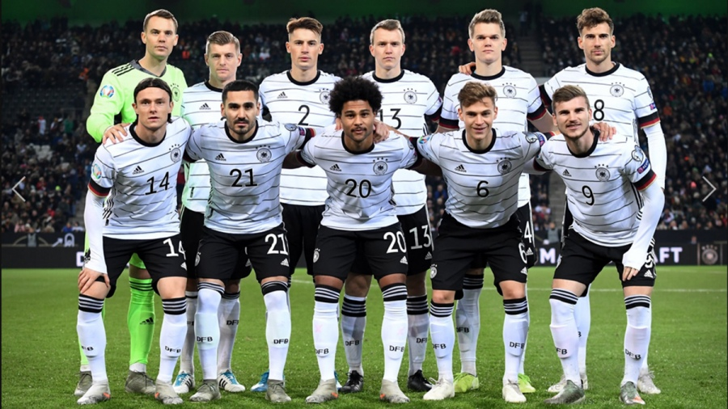

Ranking FIFA: 11° (agosto 2022).
¿Cómo se clasificó al Mundial? Ganó el Grupo J de las Eliminatorias europeas.
Rendimiento en 2021 (G-E-P): 11-2-3 (50 GF, 13 GC, +37).
Rendimiento en 2022: 2-4-0 (11 GF, 6 GC, +5).
Manuel Neuer
Jonas Hofmann
Niklas Sule
Antonio Rudiger
Thilo Kehrer
Leon Goretzka
Joshua Kimmich
Ilkay Gundogan
Serge Gnabry
Kai Havertz
Leroy Sané
Nacionalidad alemán.
Edad: 57 años.
Contratado: 25 de mayo del 2021 (asumió tras la Eurocopa).
Récord en el cargo (G-E-P): 9-4-0.
Títulos en el cargo: Ninguno.
Victoria más notable: 4-2 sobre Portugal, Eurocopa 2020 (jugada en 2021).ç
1930 Uruguay -
1934 Italia 3°
1938 Francia 10°
1950 Brasil -
1954 Suiza Campeón
1958 Suecia 4°
1962 Chile 6°
1966 Inglaterra 2°
1970 México 3°
1974 Alemania Campeón
1978 Argentina 6°
1982 España 2°
1986 México 2°
1990 Italia Campeón
1994 Estados Unidos 5°
1998 Francia 7°
2002 Corea y Japón 2°
2006 Alemania 3°
2010 Sudáfrica 3°
2014 Brasil Campeón
2018 Rusia 22°
